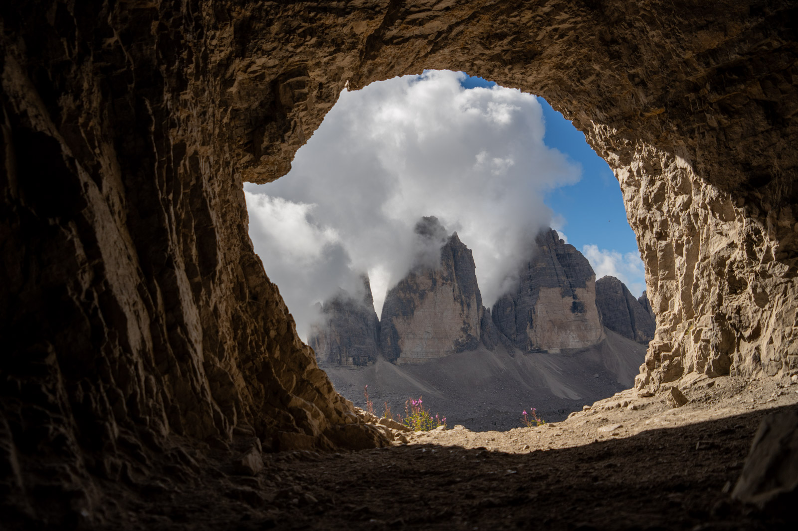
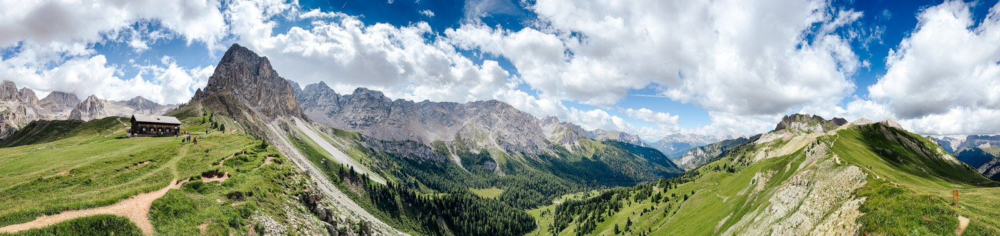
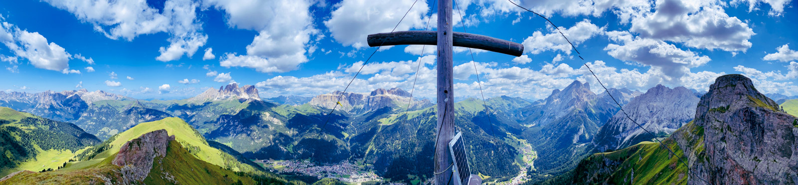
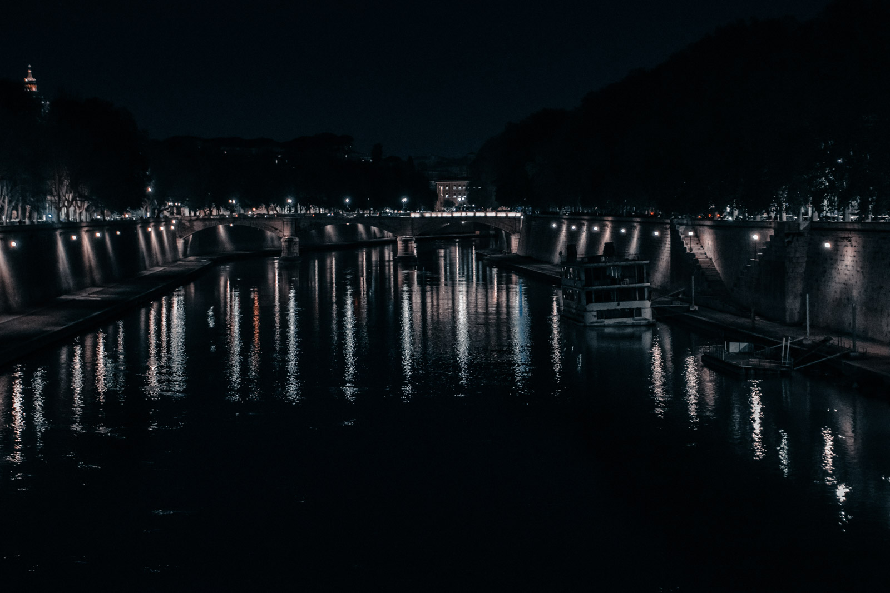

Esporre a destra
ETTR sta per expose to the right: esporre a destra. Con il RAW si espone il più chiaro possibile senza bruciare le alte luci, con l'istogramma spinto verso il bordo destro. Poi in post-produzione si riporta la luminosità al livello giusto.
Perché funziona: il sensore registra più informazioni nelle zone chiare che in quelle scure. Un'ombra schiarita in post-produzione ha più rumore di una zona già esposta bene in ripresa.
- Funziona con scene a basso contrasto, paesaggi in luce morbida, ISO alti.
- Attenzione: l'istogramma della fotocamera si basa sul JPEG, non sul RAW. Lascia un piccolo margine prima del bordo.
- Non serve con il JPEG, né quando vuoi un'immagine scura di proposito.
Bracketing e HDR
Quando la gamma dinamica della scena supera quella del sensore, una sola esposizione non basta. Il bracketing scatta più foto con esposizioni diverse, per esempio −2, 0 e +2 stop. Un programma le unisce in una sola immagine ad alta gamma dinamica, HDR.

- Imposta il bracketing automatico, tre o cinque scatti a 2 stop di distanza.
- Usa la priorità di diaframma: cambia solo il tempo, la profondità di campo resta uguale.
- Treppiede se puoi. Molti programmi allineano comunque gli scatti a mano libera.
- Unisci in Lightroom con Unione foto, HDR, o in un programma dedicato.
L'HDR ha una cattiva fama per le immagini dai colori finti. Il problema non è la tecnica ma l'eccesso. Un buon HDR non si nota.
Focus stacking
Quando la profondità di campo non basta, nemmeno a diaframma chiuso, si scattano più foto spostando ogni volta il punto di fuoco. Un programma prende da ognuna la parte nitida e le unisce.
- Macro. Un insetto o un fiore nitidi dalla punta al fondo.
- Paesaggio. Un fiore a 30 centimetri e una montagna all'orizzonte, entrambi nitidi a f/8 invece che a f/22, evitando la diffrazione.
- Strumenti. Molte fotocamere hanno il bracketing di messa a fuoco automatico. Per l'unione: Photoshop, Helicon Focus o Zerene Stacker.
Il soggetto deve essere fermo. Il vento è il nemico numero uno.
Panoramiche
Una panoramica unisce più foto affiancate. Dà più ampiezza e più risoluzione di qualsiasi grandangolo.

- Esposizione manuale e bilanciamento del bianco fisso. Se cambiano tra uno scatto e l'altro, l'unione mostra delle bande.
- Fotocamera in verticale per avere più altezza.
- Sovrapponi ogni scatto al precedente per circa un terzo.
- Ruota intorno all'obiettivo, non intorno a te. Con soggetti vicini l'errore si vede.
- Unisci in Lightroom con Unione foto, Panorama.

Lunghe esposizioni
Un tempo di diversi secondi trasforma tutto ciò che si muove: l'acqua diventa seta, le nuvole scie, le persone spariscono. Di giorno serve un filtro ND, un vetro scuro che toglie luce in modo neutro.
| Filtro | Stop tolti | Tempo risultante |
|---|---|---|
| ND8 | 3 | 1/15 s |
| ND64 | 6 | 1/2 s |
| ND1000 | 10 | 8 s |
- Treppiede solido e autoscatto o telecomando.
- Metti a fuoco e componi prima di avvitare il filtro. Con un ND forte il mirino diventa quasi nero.
- Copri il mirino ottico, sulle reflex. La luce che entra da lì può rovinare la foto.

Time-lapse
Un time-lapse è una sequenza di foto scattate a intervalli regolari e montate in un video. Le nuvole corrono, le stelle ruotano, la città si accende.
- Quante foto. A 25 fotogrammi al secondo, 10 secondi di video sono 250 foto.
- Intervallo. Nuvole veloci: 2-3 secondi. Nuvole lente e tramonti: 5-10 secondi. Stelle: un intervallo pari al tempo di scatto più un secondo.
- Tutto in manuale, fuoco compreso. Il bilanciamento automatico crea sfarfallii.
- Tempo di scatto intorno a metà dell'intervallo, per avere un movimento fluido. Di giorno serve spesso un ND.
Esercizio
Una o due uscite, meglio con il treppiede
Tre tecniche, una scena
- Scegli una scena di paesaggio con un primo piano vicino e un cielo luminoso.
- Fai un bracketing di tre scatti e uniscili in HDR.
- Fai una panoramica di cinque scatti verticali e uniscila.
- Fai uno stacking di tre scatti: primo piano, metà, orizzonte.
- Confronta con una foto singola. Quale tecnica ha davvero migliorato la foto?